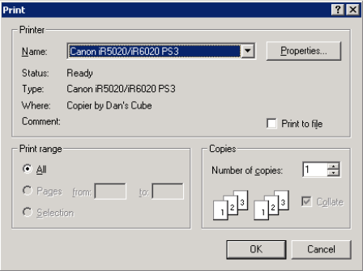

In this document, “document output” refers to any action that results in a document existing outside the system, such as a printed document, faxed document, e-mailed document, or outbound document.
This function enables you to print the currently displayed page to a local printer. This function supports color printing.
Note: This function requires your local computer to be connected to a printer and set up for printing. If you need additional information for setting up your printer, refer to printer documentation or Microsoft documentation.
While viewing a document, navigate to the page you want to print and select Local Print from the File menu.
The system displays a standard Windows Print dialog box.

Note: The Properties button provides access to options available for your printer. These options depend on the type of printer you are using and are beyond the scope of this document. See documentation for your printer for information.
Enter data as required and click OK to print the document at the printer you specify.
Tip: If the resolution of printed pages is unacceptable, try using a different font when viewing the document as text. Hyland recommends Lucida Console or Courier New.